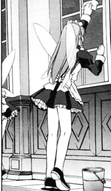

- Welcome to Touhou Wiki!
- Please register to edit. For assistance, check in with our Discord server or IRC channel.
Fairy Maid
Jump to navigation
Jump to search
Fairy Maid | |
|---|---|
|
 | |
| Species | |
| Occupation | |
| Location | |
Appearances | |
| Official Games | |
| |
| Print Works | |
| |
Fairy Maids (妖精メイド Yōseimeido) are the maids (excluding Sakuya Izayoi) who work in Scarlet Devil Mansion. There are thought to at least be 28 of them.
Character Design[edit]
Name[edit]
They are officially referred to as Fairy Maids (
Relationships[edit]
- Residents of the Scarlet Devil Mansion
Remilia Scarlet is the fairy maid's mistress whom which they primarily serve, as well as Flandre Scarlet whom they presumably serve as well and Patchouli Knowledge that can be seen sometimes serving. Hong Meiling, Koakuma and Sakuya Izayoi are their fellow employees, where Sakuya is also their superior.
Gallery[edit]
Fairy Maids from Silent Sinner in Blue by Aki★Eda
Additional Information[edit]
- They're mentioned often by the residents of Scarlet Devil Mansion whenever the word fairy comes up.
- The same three fairy maids who travelled with Reimu's party to the Moon in Touhou Bougetsushou made a brief reappearance five years later in Chapter 21 of Wild and Horned Hermit
Official Sources[edit]
- 2002/08/11 Embodiment of Scarlet Devil